Uskomus ei ole mielipide. Se on huone, jossa mieli suostuu asumaan.
Tämä on haaran ensimmäinen maa. Kolmetoista korttia, eikä minkään vanhemman pakan asu. Kymmenen vakaumuksen säätä, sitten kolme, jotka kävelevät niiden halki: Etsijä, Haltija, Mestari.
Lue kortti rakenteesta, jonka se nimeää. Kuva on jo väite. Ennustus saa odottaa.
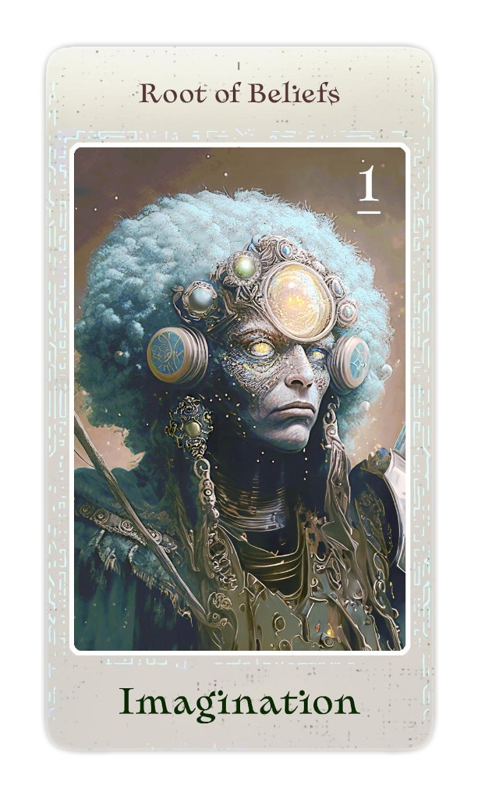
I · Uskomusten juuri
Mielikuvitus
Ennen kuin uskomuksella on todiste, sillä on kasvot.
Linssi otsalla on väline, joka tekee tunteesta jotain katsottavaa. Pilvi, metalli ja vihreä pimeä kurkussa ovat sama sää: ajatus ennen kuin se on valinnut puolen.
Mielikuvitus on juuri, koska mikään myöhempi tässä maassa ei seiso ennen kuin kuva on uskallettu. Uskomus jota ei saa kuvaksi on vain huhu itsestään.
LuettaessaAsia on vielä muotoutumaton, ja se on sen voima. Anna sille kuva ennen kuin annat sille lain.
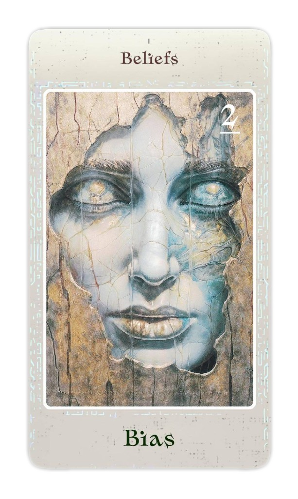
II · Uskomukset
Vinouma
Toinen silmä lepää, jotta toinen voi olla varma.
Kasvot ovat posliinia joka on jo haljennut, ja halkeama on kasvattanut kaarnan. Vinouma on lasin juova: suljettu silmä, avoin silmä, suu joka on jähmettynyt.
Tämän kortin kohtaaminen on huomata, kumpaan kasvojen puoliskoon olet luottanut. Puu ei pyydä anteeksi sitä, että on puuta.
LuettaessaNimeä linssi ennen kuin nimeät tosiasian. Se mitä kutsut ilmeiseksi on silmä, joka jäi auki.
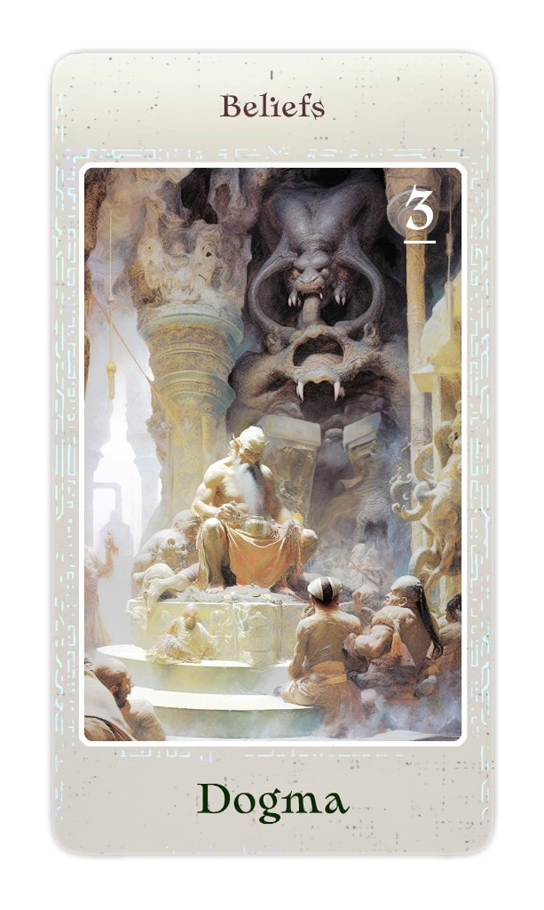
III · Uskomukset
Dogmi
Opetus istuu. Pelko riippuu sen yllä.
Vanhus valtaistuimella, seurakunta portailla, ja holvissa suu jossa on liikaa hampaita. Dogmi on uskomus, joka on palkannut huoneen, yleisön ja hirviön pitämään katon kiinnostavana.
Se on totuus joka unohti olleensa kerran kysymys, ja rakensi temppelin ettei sitä kysyttäisi uudestaan.
LuettaessaJotain täällä suojellaan seremonialla. Kysy ketä palvellaan, jos kysymys pysyy istumassa.
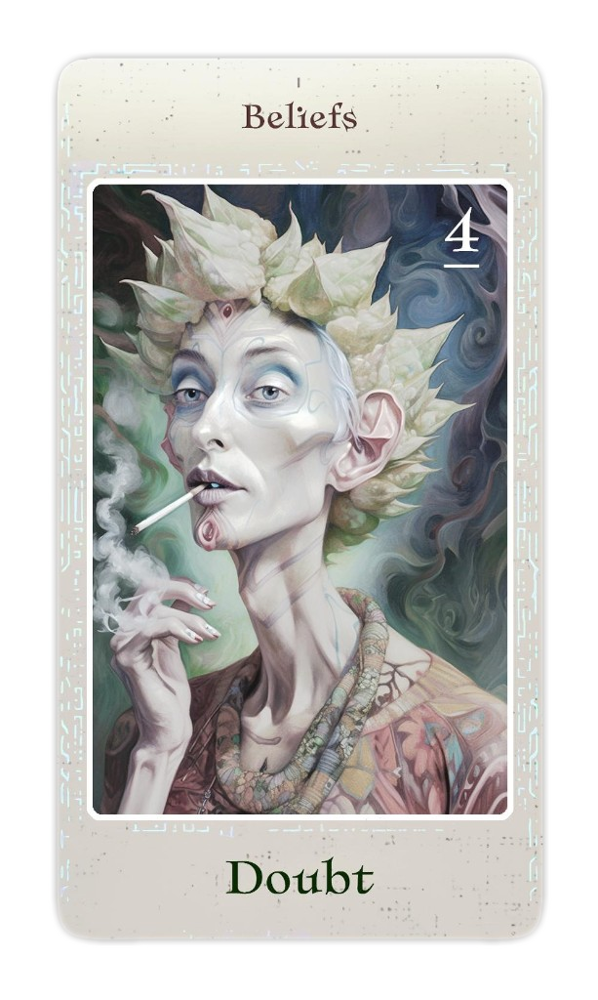
IV · Uskomukset
Epäilys
Savu on väite, joka yhä lähtee suusta.
Kalpeat kasvot, lehtikruunu, kolmas silmä joka aukesi koska kaksi tavallista lakkasi olemasta yhtä mieltä. Epäilys savuaa. Se pitää hiillosta siinä, missä hengitys näkee sen.
Epäilys on uskomus, joka suostuu jäämään keskeneräiseksi. Maan rehellinen kortti.
LuettaessaÄlä kiirehdi savua tuomioksi. Kolmas silmä on auki. Anna kahden muun ehtiä perässä.
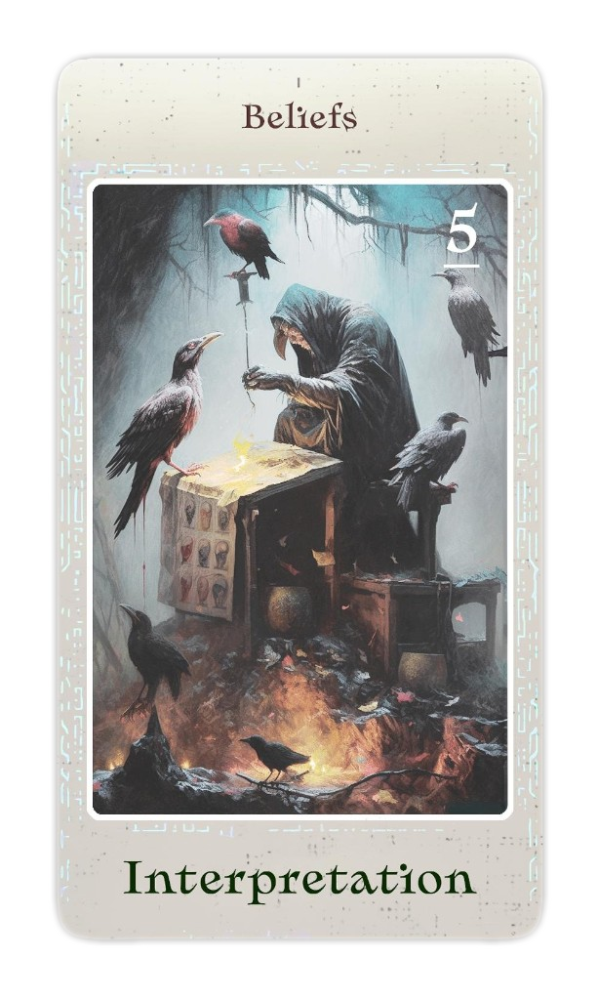
V · Uskomukset
Tulkinta
Merkitys on lanka, jonka annat jollekin joka osaa lentää.
Hupullinen kirjuri, naru, varisten raati, kasvojen kartta, tuli alla. Tulkinta on ammatti, jossa linnuille annetaan lanka ja takaisin tuotu luetaan kuin se olisi ollut omaa.
Tuli on todellinen. Kartta on arvaus, joka oppi näyttämään viralliselta. Niiden välissä seisoo ainoa rehellinen hahmo: se, joka ei näytä kasvoja.
LuettaessaOlet antamassa kuviolle viestin nimen. Huomaa mitä lintua kuuntelet, ja minkä olet jo päättänyt olevan pelkkää säätä.
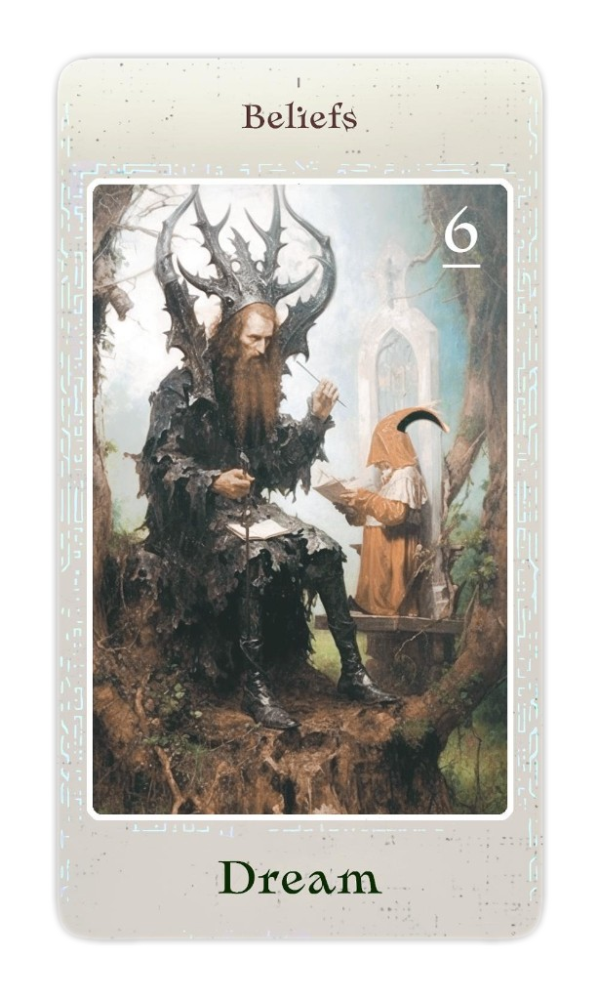
VI · Uskomukset
Uni
Metsä sanelee. Kirjurilla ei ole vielä kasvoja.
Sarvekas kirjoittaja istuu juurissa, ja hupullinen kirjuri kopioi, huppu auki siinä missä kasvojen pitäisi olla. Uni on uskomus, joka saapuu ennen kuin sen vaatijalla on piirteitä.
Polvella olevaa kirjaa kirjoittaa jo jokin kättä vanhempi. Kirjurin työ on pysyä mukana keksimättä nimeä liian aikaisin.
LuettaessaKuva on selitystäsi edellä. Kirjoita se ylös ennen kuin tulkitset. Kasvot voivat tulla myöhemmin.
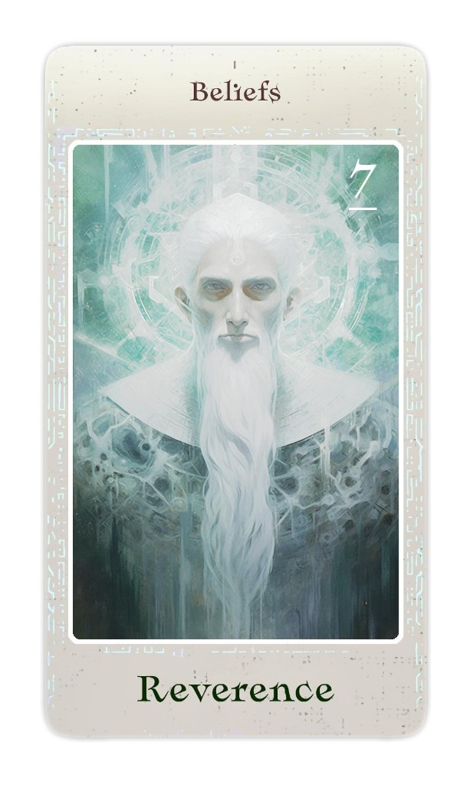
VII · Uskomukset
Kunnioitus
Tarkkaavaisuus, joka on suostunut olemaan kohdettaan pienempi.
Valkoiset hiukset, parta kuin hidas joki, merkki otsalla, geometria pään takana jota ei tarvitse ratkaista. Kunnioitus on asento, jossa mieli on lakannut yrittämästä olla huoneen suurin asia.
Valokaulus on horisontti puettuna. Kunnioitettu pysyy nimeämättä, koska nimi kutistaisi sen takaisin työkaluksi.
LuettaessaLähesty tarttumatta. Seiso paikallasi niin kauan, että asia ehtii olla itsensä.
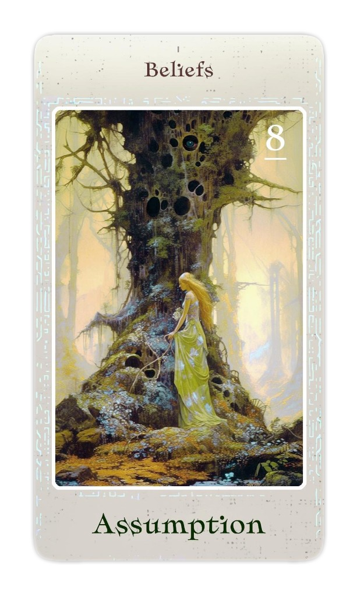
VIII · Uskomukset
Oletus
Otat polun, koska puu näyttää jo asutulta.
Nainen vihreässä rungon luona, joka on täynnä koloja, ja yksi koloista on silmä. Oletus on askel, joka otetaan ennen kysymystä. Puku, kukat ja noja kohtelevat puuta talona.
Joskus silmä on todella siellä. Joskus pimeä on vain pahka. Kortti ei sano kumpaa. Se sanoo, että olet jo päättänyt.
LuettaessaEtsi askel, jota et huomannut ottaneesi. Se askel kantaa päätelmän.
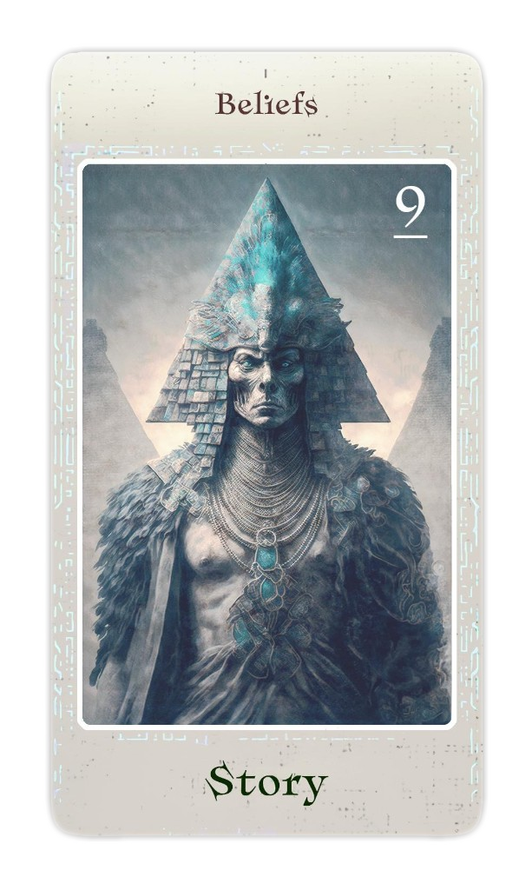
IX · Uskomukset
Tarina
Ruumis koottu vieraista kivistä, jotta rinta voi jatkaa kävelyä.
Pää on laattojen pyramidi, kurkku ketjujen aarre, hartiat monumenttien sää. Tarina on tapa, jolla uskomus selviää tekijästään: muuttumalla arkkitehtuuriksi, jonka sisällä joku toinen voi seistä.
Kasvot näkyvät yhä, juuri ja juuri, monumentin alta. Tarina joka unohtaa että sillä on kasvot, muuttuu raunioksi joka antaa käskyjä.
LuettaessaOlet kertomuksen sisällä. Kysy oletko kertoja, kivi, vai se jota varten monumentti rakennettiin.
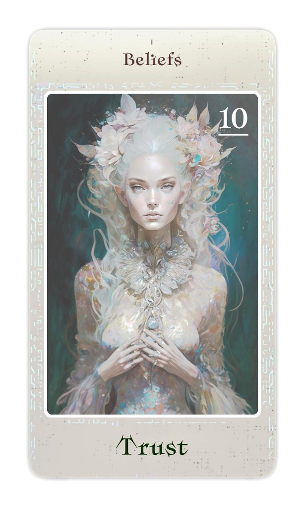
X · Uskomukset
Luottamus
Kädet kohtaavat eivätkä tarkista otetta.
Kukkia, kalpea röyhelö, sormet lomittain rintalastalla. Luottamus on kymmenestä viimeinen, koska se on uskomus joka on lakannut tutkimasta itseään. Koriste on rohkeus näkyä vartioimatta.
Silmät ovat auki ja tasassa. Kuvassa mikään ei piile, siksi sen voi luulla turvaksi.
LuettaessaJokin voidaan antaa ilman sopimusta. Ota se vastaan sellaisenaan. Älä koristele lahjaa todisteeksi.
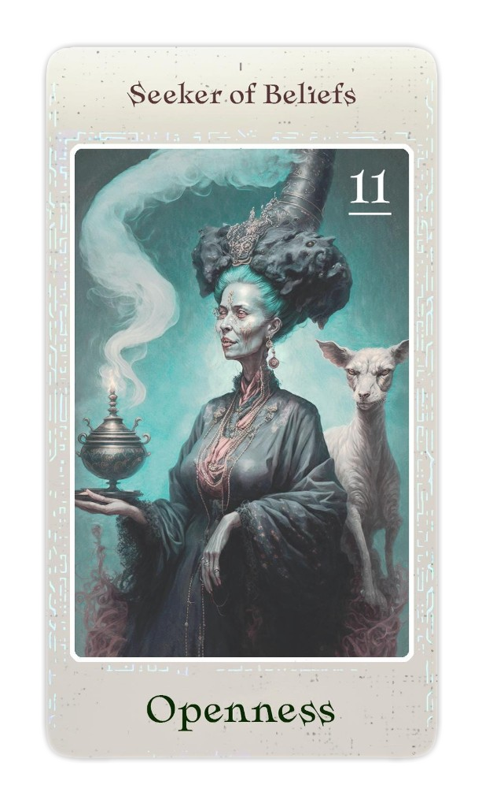
XI · Uskomusten etsijä
Avoimuus
Hän pitää ikkunan auki ja antaa eläimen seistä kytkemättä.
Etsijä suitsutusastian kanssa, savu joka lähtee kohti petojen tummaa kruunua, kalpea karitsa olalla jota kukaan ei pidä. Avoimuus on kuri olla sulkematta kättä sen ympärille, mikä on tullut seisomaan viereen.
Hovi alkaa tästä. Kymmenen kuvasi sään. Etsijä on se, joka kävelee siihen tuli mukanaan ja kieltäytyy hihnasta.
LuettaessaPysy läpäisevänä. Älä ota uskomusta vielä, äläkä aja sitä pois. Anna sen jäädä vieraaksi.
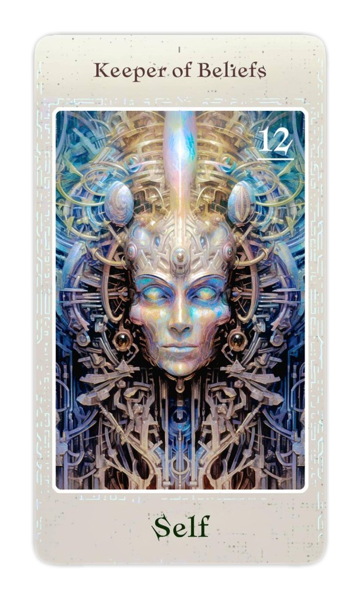
XII · Uskomusten haltija
Itse
Silmät sulkeutuvat, ja koneisto jatkaa kasvoina.
Naamio hohtavaa metallia, silmät kiinni, rattaiden ja pienten hahmojen temppeli joka kannattelee kuvaa. Itse on se, mitä Haltija vartioi: relikvaario. Identiteetti jatkuu sen jälkeen, kun katse joka teki sen on päättynyt.
Vaara on kotelon palvonta. Itse jota ei voi avata, muuttuu yhden ihmisen dogmiksi.
Molemmat kasvot katsovat. Maailma riippuu yhdestä pisteestä.
Kaksikasvoinen istuja kartion alla, saarella joka on myös nurin käännetty vuori, planeettoja ja pieniä aluksia langalla lumen yllä. Vapaus on tasapaino, jossa uskomus ei enää tarvitse maata ollakseen tosi.
Mestari ei lakkauta maata. Mielikuvitus, vinouma, dogmi, epäilys — ne ovat yhä taivaalla, astioina. Ne ovat lakanneet olemasta lattia.
LuettaessaSaat laskea uskomuksen alas kavaltaamatta sitä. Jäljelle jää istuin, ja istuin riittää.
Maa II
Muutokset
Muutos ei ole tapahtuma. Se on väli, jossa asia suostuu tulemaan toiseksi asiaksi.
Tämä on toinen maa. Kolmetoista korttia, eikä minkään vanhemman pakan asu. Kymmenen käänteen säätä, sitten kolme, jotka kävelevät niiden halki: Etsijä, Haltija, Mestari.
Lue kortti liikkeestä, jonka se nimeää. Kuva on jo käänne. Ennustus saa odottaa.
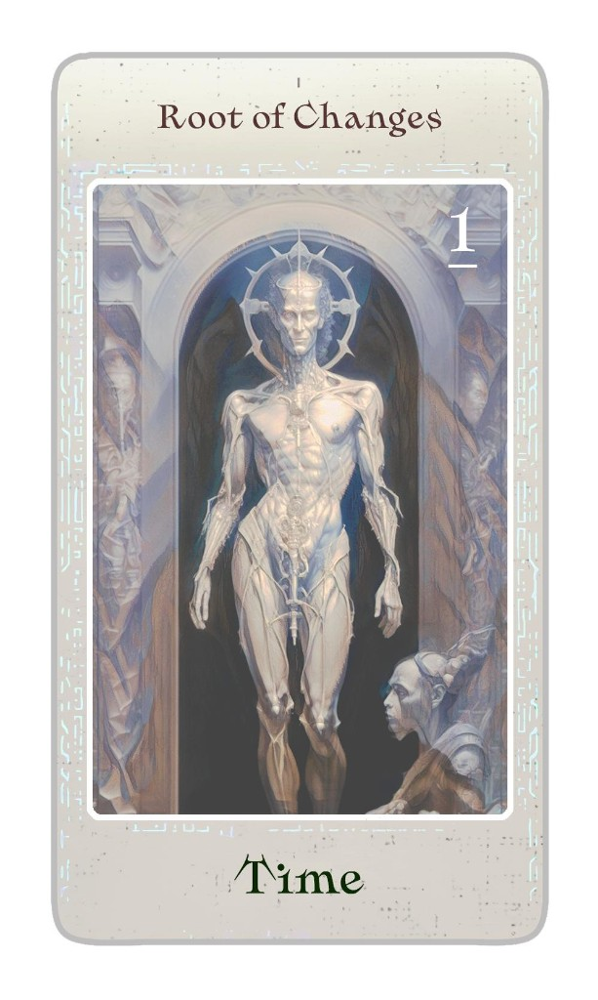
I · Muutosten juuri
Aika
Ennen kuin mikään liikkuu, keston on suostuttava.
Kaaren hahmo ei ole puettu. Lihas, suoni ja piikkinen sädekehä ovat ruumis, näytettynä kellona jota pidetään sisäpuolella. Pienemmät kasvot katsovat ylös portaalta, koska aika näkyy vain sille joka on jo sen sisällä.
Muutoksella ei ole juurta ennen kuin yksi hetki voidaan erottaa seuraavasta. Ilman sitä eroa pelko ja uudistus ovat sama sää.
LuettaessaAsialla on kesto, ja se on koko lupa. Anna yhden hetken loppua ennen kuin pyydät seuraavaa alkamaan.
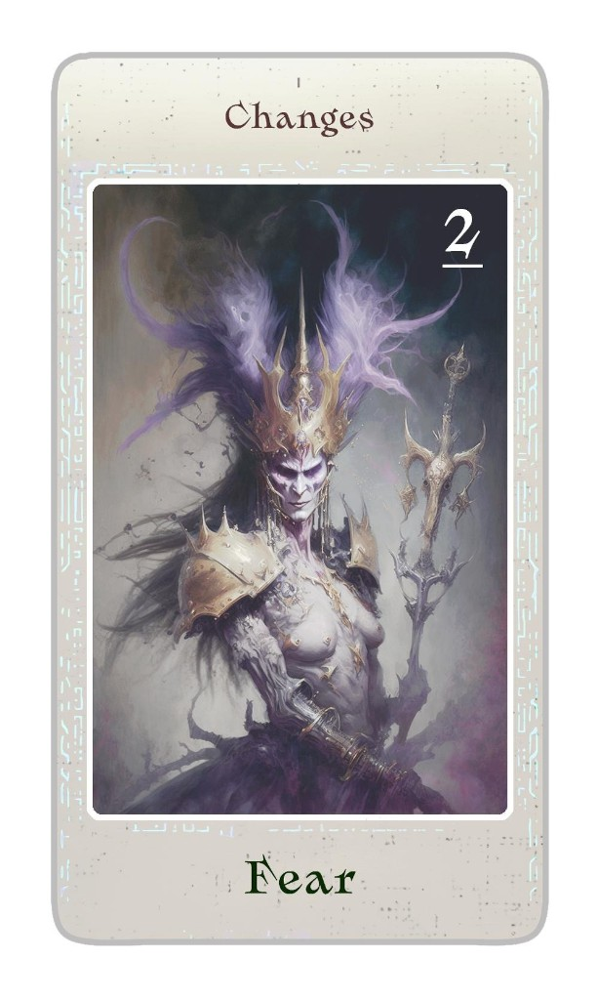
II · Muutokset
Pelko
Ensimmäinen muoto, jonka muutos ottaa, on ase.
Violetti savu on oppinut olemaan kruunu. Kultalevyt istuvat ruumiilla joka on jo puoliksi piikki, ja sauva on reliikki joka yhä odottaa että sitä totellaan. Pelko on tapa, jolla hermosto ilmoittaa että huone ei ole enää se huone.
Se on toinen kortti, koska käännettä jota ei voi pelätä ei ole tunnettu. Kruunu on säätä. Sauvan voi laskea.
LuettaessaNimeä se, mille ruumis varautuu. Hälytys on tietoa. Se ei ole vielä päätös.
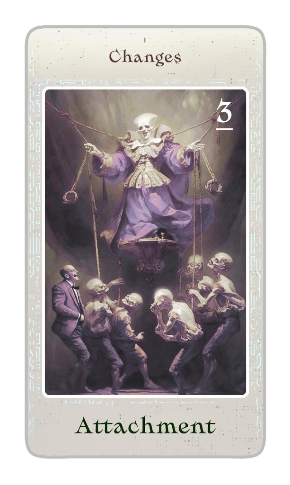
III · Muutokset
Kiintymys
Se mikä ei putoa, pidetään ylhäällä.
Hymyilevä ruumis violetissa riippuu köysistä, eivätkä kaikki köysien kädet ole elossa. Yksi mies tummassa puvussa nauraa vetäessään. Loput ovat luuta. Kiintymys pitää muutoksen ilmassa kuluttamalla muita ihmisiä naruissa.
Hahmo näyttää seremonialliselta. Alla oleva työ on työtä. Korkeus on tässä lasku.
LuettaessaKysy kuka pitää köydestä, ja onko korkeus heidän käsivarsiensa arvoinen. Löysyys on eräänlaista rehellisyyttä.
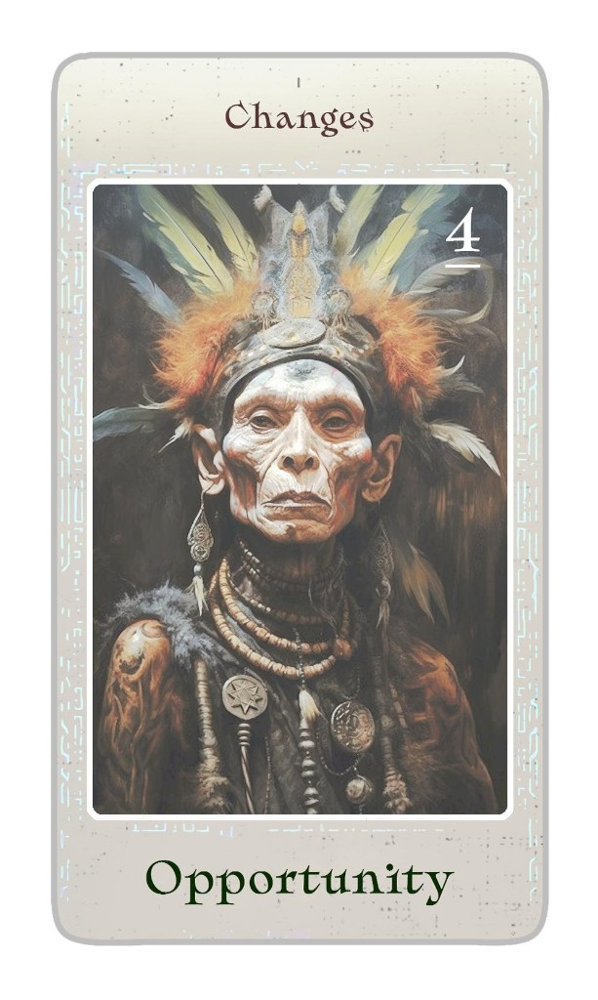
IV · Muutokset
Tilaisuus
Sään pieksemät kasvot voivat yhä katsoa sinua suoraan.
Höyhenet avautuvat useampaan suuntaan. Helmet, tähti olalla, kolikko rinnassa: vanhus on puettu siihen, mitä aiemmat käänteet jättivät. Tilaisuus ei ole tyhjä ovi. Se on suunta, joka säilyi.
Muotokuva ei hymyile. Se tarjoaa katseen, joka on tiukempi kuin kutsu.
LuettaessaAukko kantaa jo historiaa. Astu sitä kohti teeskentelemättä olevasi ensimmäinen.
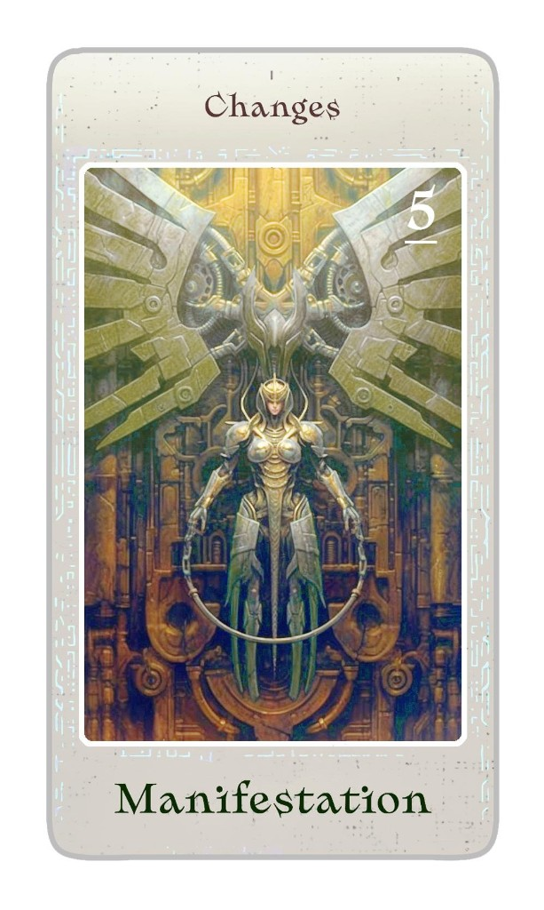
V · Muutokset
Ilmentymä
Toiveesta tulee ruumis, jonka ympäri voi kävellä.
Koneistetun kullan siivet täyttävät rattaiden katedraalin. Hahmo pitää sormusta oviaukon kokoista, ja sormus on piiri jonka muutos sulkee kun se lakkaa olemasta kuviteltu. Vihreä jaloissa on elävä asia, jonka kone suostui kantamaan.
Käänne joka ei koskaan ota muotoa on vain huhu liikkeestä. Paino on todiste.
LuettaessaAnna muutokselle muoto, jonka vieressä voi seistä. Ennen kuin sillä on paino, se on yhä toive.
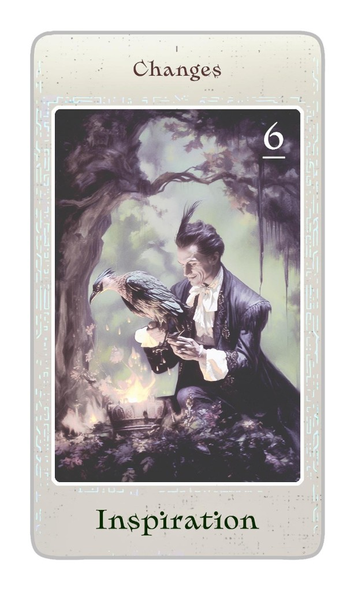
VI · Muutokset
Innoitus
Lintu laskeutuu, koska tuli pidettiin pienenä.
Polvistuva mies vanhassa takissa, valkoista kurkussa, ojentaa kätensä töyhtölinnulle. Puu kallistuu lähelle, ja matala liekki tekee työtään hiilipannussa. Innoitus on vieras. Se tarvitsee paikan mihin istua, ja jotain joka jo palaa.
Hymy on riski tulla muutetuksi siitä, mitä kutsuit. Suurempi tuli olisi lähettänyt linnun takaisin lehtiin.
LuettaessaTee tuli pienemmäksi, älä suuremmaksi. Se mikä on tulossa tarvitsee ranteen, ei lavaa.
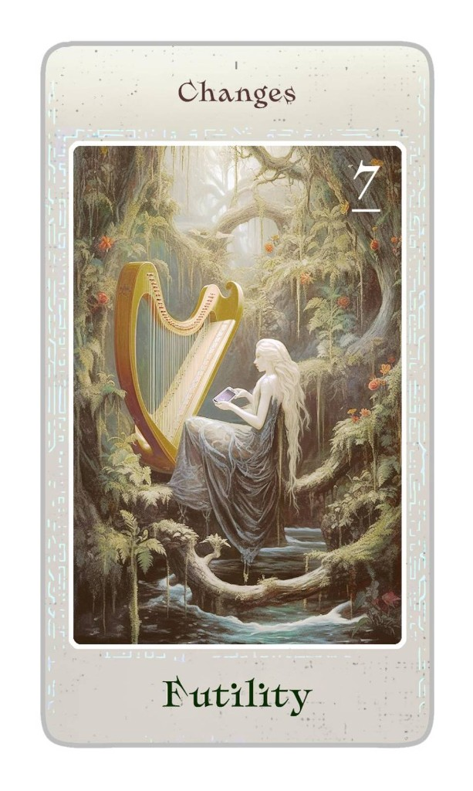
VII · Muutokset
Turhuus
Soitin on kaunis. Joki ei kuunnellut.
Nainen istuu juurella liikkuvan veden yllä, harppu aukiota suurempi selän takana, pieni esine kupissa käsissä. Sammal, orkideat ja virta jatkavat omaa työtään. Laulu ei ole tyhjä. Se vain ei ole joki.
Turhuus on ponnistus, joka on suunnattu väärään aineeseen. Harppu ei epäonnistunut. Virrasta ei ollut koskaan tulossa musiikkia.
LuettaessaLakkaa pyytämästä vettä harpuksi. Siirrä musiikki, tai anna virran pitää nimensä.
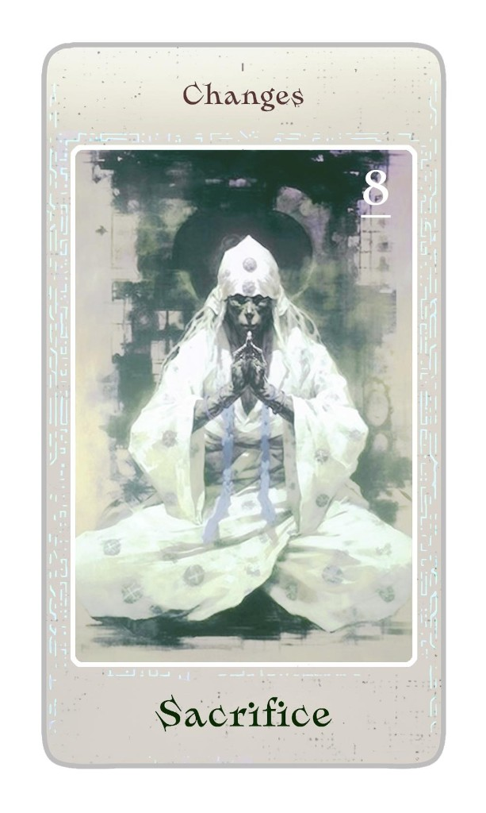
VIII · Muutokset
Uhraus
Valkoinen on lattia, jonka raivaat sille mikä tulee seuraavaksi.
Istuva hahmo, kasvot varjossa, kädet painettuina, sinisiä helmiä putoaa sormien välistä. Viitta on merkitty pienillä risteillä ja ympyröillä, ja tumma suu aukeaa seinässä takana. Valkoinen ei ole viattomuutta. Se on se, mikä laskettiin jotta muutoksella olisi paikka seistä.
Huone voi olla valmis ja silti tyhjä. Tyhjentäminen ei ole sama asia kuin saapuminen.
LuettaessaLaske se yksi asia, jonka käänne todella tarvitsee. Uhri joka maksaa kaiken on yleensä pelko valkoiseen puettuna.
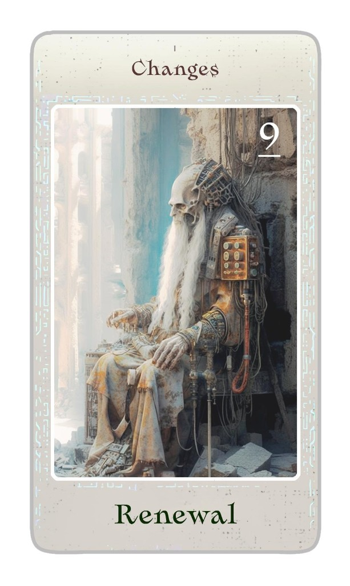
IX · Muutokset
Uudistus
Sama ruumis, koottu uudelleen sen ympärille mikä yhä johtaa virtaa.
Luinen vanhus istuu rikkinäisessä seinässä, parta kuin joki, toinen käsivarsi kytkinten kaappi, johdot kiveen. Toinen käsi on yhä käsi. Uudistus ei ole uusi alku. Se on sopimus tulla korjatuksi paikallaan, raunio näkyvissä.
Se mikä johtaa virtaa pidetään. Se mikä vain muisti johtaneensa virtaa saa muuttua johdoksi.
LuettaessaKorjaa liitos, joka yhä kantaa virtaa. Älä hio seinää takaisin vuoteen, joka on mennyt.
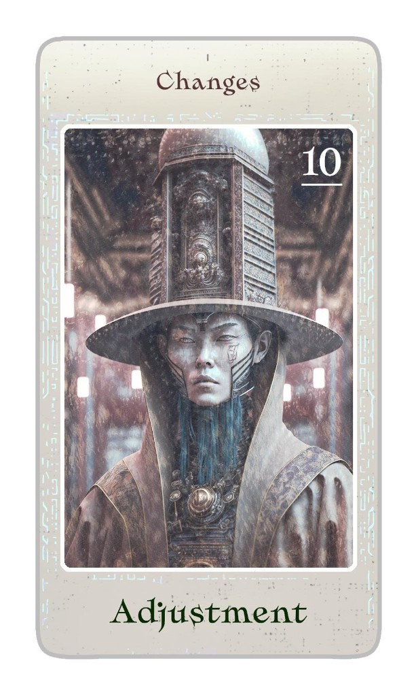
X · Muutokset
Säätö
Pieni korjaus estää suurta rakennetta valehtelemasta.
Hattu on torni: messinkiä, kerroksia, mitta päässä. Siniset tupsut putoavat sinne missä parta olisi, ja kasvoissa on merkkejä silmien alla kuin kalibrointi joka hyväksyttiin. Takana ovien käytävä. Muutos jota ei voi virittää muuttuu dogmiksi, jolla on jalat.
Kasvot ovat tyynet. Hattu tekee työn. Kymmenestä säästä viimeinen on kymmenesosa käänteestä.
LuettaessaKorjaa mitta, älä ihmistä. Pieni käännös on joskus koko käänne.
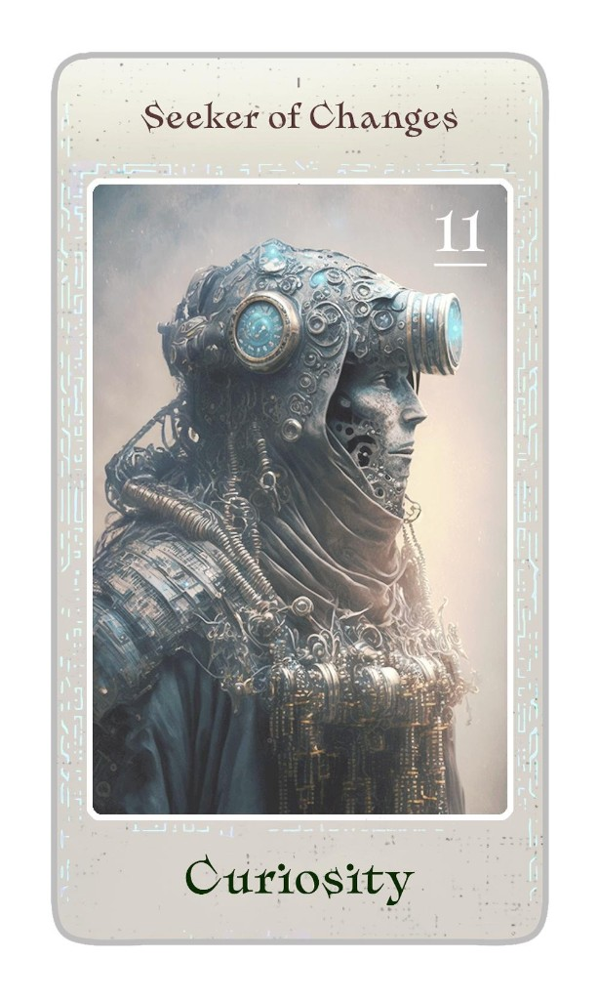
XI · Muutosten etsijä
Uteliaisuus
Väline, ei tuomio.
Profiili sukelluskypärässä, yksi linssi sinisenä, kaapeleita ja pieniä mekanismeja riippuen kuin toinen parta. Kasvot ovat sen verran paljaat että ovat ihmisen, ja sen verran kiinni että voivat mennä alle. Uteliaisuus on lähestymisen hovi: halu tulla muutetuksi siitä mitä linssi löytää, ennen kuin nimi annetaan.
Kypärä on tapa pysyä läsnä tuntemattomassa. Se ei ole panssari sitä vastaan.
LuettaessaKatso kauemmin kuin on mukavaa, äläkä päätä ensimmäisellä hengenvedolla. Linssi on jo auki.
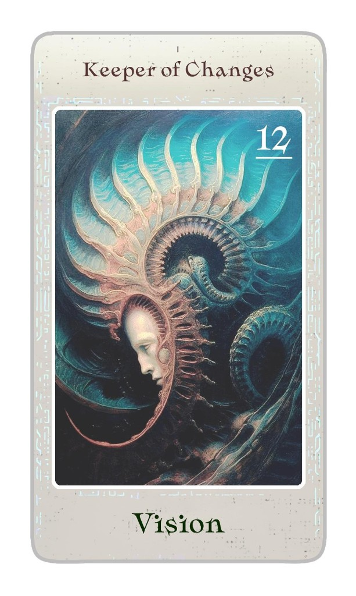
XII · Muutosten haltija
Näky
Spiraali, ei ennuste.
Kasvot profiilissa, silmät kiinni, kasvaneet terien ja kammioiden kotiloksi. Turkoosia ja luuta, toinen kierre pimeässä. Näky on kyky pitää useampi kuin yksi tulevaisuus samassa kuoressa. Silmät ovat kiinni, koska silmäys litistäisi kuvan.
Haltija ei kuluta näkyä. Sen kuluttaminen tekisi siitä suunnitelman, ja suunnitelma on pienempi huone.
LuettaessaPidä kuva pakottamatta sitä yhteen oveen. Näky joka voi olla vain yksi asia on jo muuttunut peloksi.
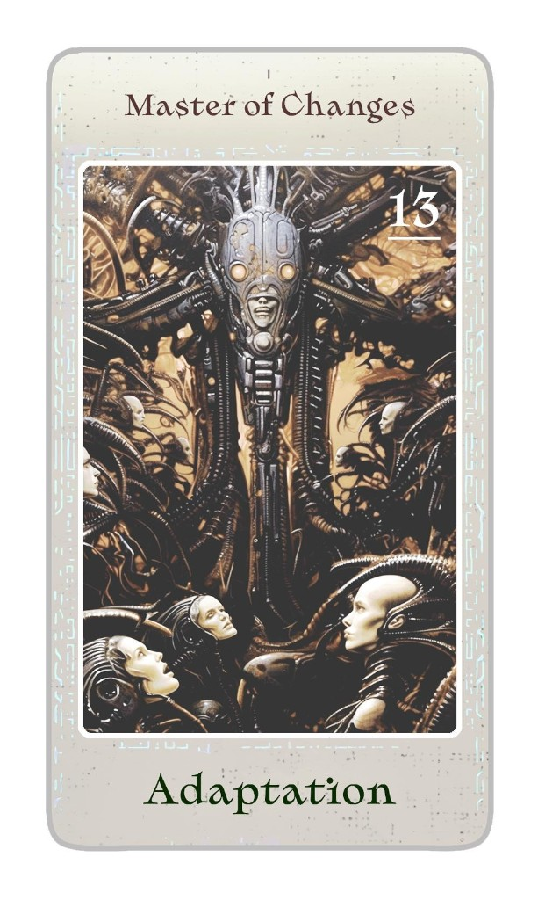
XIII · Muutosten mestari
Sopeutuminen
Muoto, joka voi elää käänteen kanssa.
Pylväs konetta ja kasvoja, kaapeleita kuin juuria, lamppuja silminä. Ympärillä muita kasvoja — jotkut katsovat ylös, jotkut profiilissa, jotkut puoliksi imeytyneinä samaan koneistoon. Sopeutuminen ei ole voitto muutoksesta. Se on ruumis, joka ei enää tarvitse vanhaa ääriviivaa jatkaakseen.
Kasvot eivät ole yleisö. Ne ovat aiemmat versiot, jotka jäivät. Mestari pitää sen mikä yhä johtaa virtaa, ja päästää ääriviivan menemään.
LuettaessaPidä versiot, jotka yhä kantavat virtaa. Jäljelle jää tapa jatkaa.
Maa III
Voimat
Voima ei ole väki. Se on kyky, joka on löytänyt ruumiin valmiin kantamaan sen.
Tämä on kolmas maa. Kolmetoista korttia, eikä minkään vanhemman pakan asu. Kymmenen kyvyn säätä, sitten kolme, jotka kävelevät niiden halki: Etsijä, Haltija, Mestari.
Lue kortti kyvystä, jonka se nimeää. Kuva on jo käyttö. Ennustus saa odottaa.
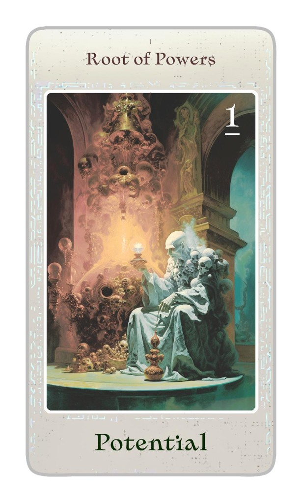
I · Voimien juuri
Potentiaali
Pylväs palaa jo. Lamppu on vain tapa, jolla lähestyt sitä.
Vanhus vaaleissa viitoissa istuu kallojen keskellä ja ojentaa pientä valoa kohti pylvästä, jossa on kultaa, luuta ja riippuvia kelloja. Kallot eivät ole uhka. Ne ovat muotoja, joiden läpi kyky on jo kulkenut. Lamppu on pieni, koska pylvästä ei tarvitse sytyttää.
Potentiaali on juuri, koska voima joka ei ole vielä valinnut käyttöä on yhä voima. Liian aikainen nimeäminen kuluttaa sen.
LuettaessaKyky on läsnä ja käyttämätön. Lähesty sitä. Älä anna sille tehtävää ennen kuin olet seisonut sen valossa.
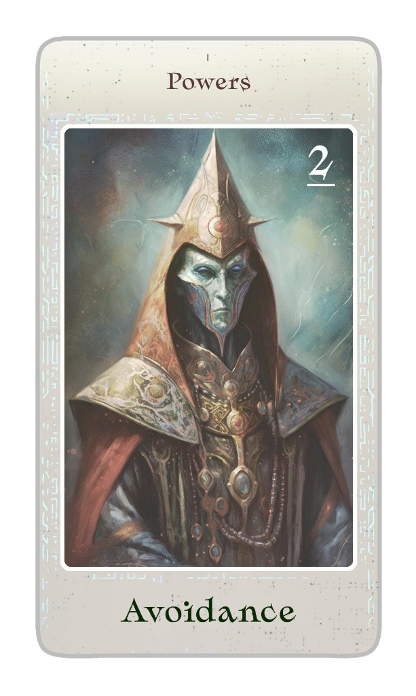
II · Voimat
Välttely
Asu on hieno, koska kieltäytymisellä on ollut aikaa muuttua tyyliksi.
Korkea huppu, suippo kullattu lakki, kasvot työstetty naamioiksi, silmät jotka eivät aivan kohtaa sinua. Kivien ketjut putoavat sinne, missä ääni olisi. Välttely on voima, joka kuluu saapumatta. Metalli on todiste siitä, että kieltäytymistä on harjoitettu.
Se on toinen kortti, koska kykyä jota ei voi kieltäytyä ei ole valittu. Huppu on päätös, jota pidetään päässä.
LuettaessaHuomaa, mitä loisto pitää etäällä. Välttely on taitavaa. Kysy, onko etäisyys yhä se työ.
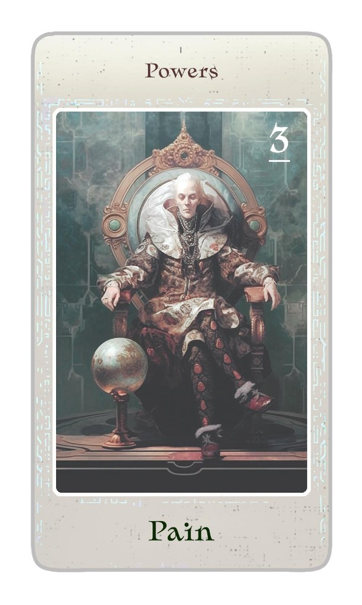
III · Voimat
Kipu
Valtaistuin on mukava. Sillä tavoin oppi pysyy.
Kalpea hahmo istuu korkeassa kauluksessa ja kuvioidussa takissa, toinen jalka edessä, karttapallo polvella. Kipu on kyky, joka opettaa ruumiin rajan asuttamalla sen. Tuoli ei ole rangaistus. Se on istuin, joka on tehty tarpeeksi helpoksi jotta siinä voi jäädä.
Voima joka sattuu voidaan silti annostella. Karttapallo sanoo, että kivulla on maailma, ei vain hermo.
LuettaessaEpämukavuus on tietoa, jolla on valtaistuin. Älä koristele sitä, äläkä teeskentele että tuoli on tyhjä.
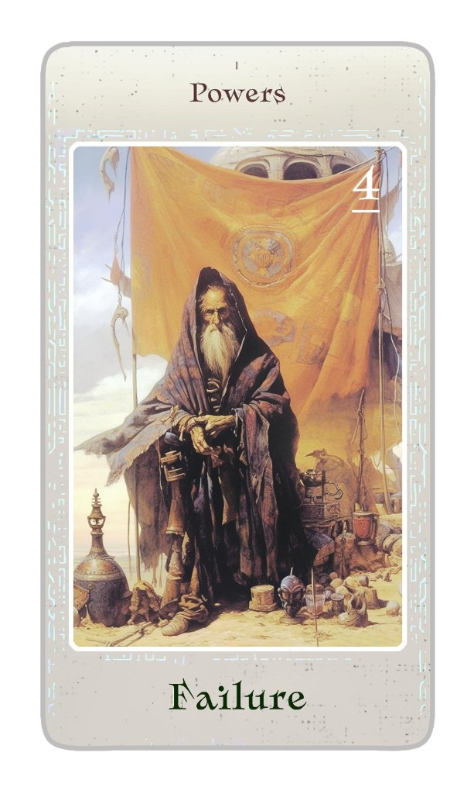
IV · Voimat
Epäonnistuminen
Lippu on yhä suurenmoinen. Maa on pitänyt työkalut.
Vanhus seisoo valtavan keltaisen kankaan alla hylättyjen astioiden leirissä, pieni olento jaloissa, autiomaa kirkkaana takana. Epäonnistuminen on tunti sen jälkeen, kun työ on lakannut suostumasta. Lippu ei tullut alas. Se mitä se ei kyennyt kantamaan makaa hiekassa.
Tämä on kyky, ei tuomio. Voima joka ei voi epäonnistua ei ole koskaan käytetty siellä, missä sää on todellinen.
LuettaessaJätä lippu ylös jos on pakko, ja penko se mikä putosi. Epäonnistuminen on luettelo, ei häpeä.
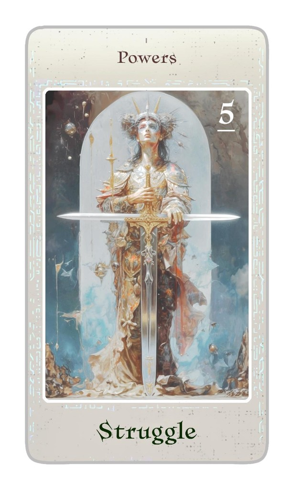
V · Voimat
Kamppailu
Terä pidetään ruumiin poikki, koska taistelusta on tullut viiva.
Hahmo seisoo vaaleassa kaaressa, yksi miekka pystyssä, toinen vaakasuorassa käsien läpi, ruostetta tai verta metallissa, kärkien kruunu. Kamppailu on kyky, jonka kohtaa yhtä suuri kyky. Kaari ei ota puolta. Vaakasuora terä on paikka, jossa on elettävä.
Kumpikaan kärki ei ole voittanut. Siksi kortti on maan keskellä, siinä missä voima oppii ettei ole yksin.
LuettaessaPysy viivalla. Kamppailu on kahden voiman työtä, ja sen lopettaminen aikaisin tuhlaisi molemmat.
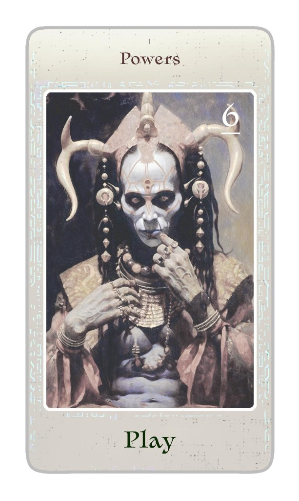
VI · Voimat
Leikki
Sormi huulilla on sääntö, ei salaisuus.
Sarvekkaat kasvot, maalatut kalpeiksi, koruja riippuen otsalta, toinen käsi nostettuna suulle ja toinen laskee helmiä. Leikki on voima, joka kieltäytyy juhlallisuudesta. Hiljaisuus tarkoittaa, että peli on jo käynnissä, ja puhuminen rikkoisi siirron.
Sarvet eivät ole uhka. Ne ovat asu, jonka kyky pukee kun se tanssisi mieluummin kuin säätäisi.
LuettaessaKohtele asiaa pelinä, jolla on todellinen panos. Vakavuus ei ole sama asia kuin tarkkaavaisuus.
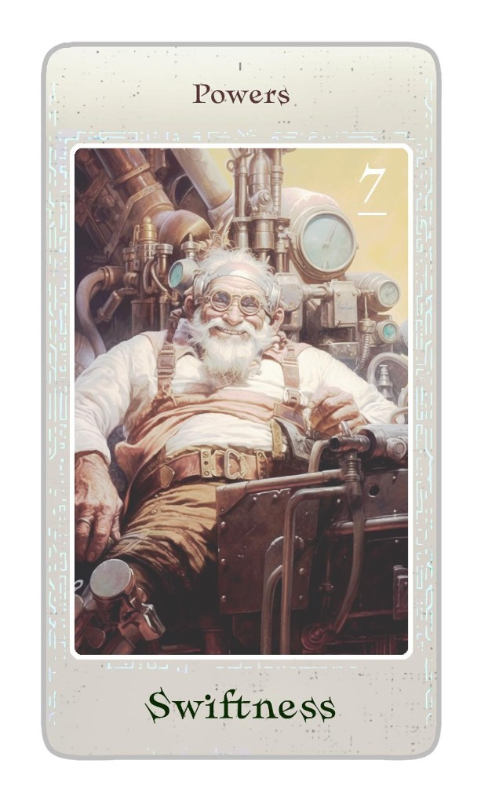
VII · Voimat
Nopeus
Hymy kuuluu jollekulle, joka on jo liikkunut.
Valkopartainen insinööri nojaa taakse putkien, mittarien ja messingin pesässä, suojalasit päässä, molemmat kädet ohjaimissa. Nopeus on kyky, joka saapuu ennen väitettä. Kone ei ole koriste. Se on tapa, jolla päätös ehtii rinnassa olevan komitean edelle.
Nopeus ilman mittaria on vain paniikkia. Tässä kellotaulut palavat, ja kasvot ovat iloiset.
LuettaessaLiiku kun luku on vielä lämmin. Epäröinti olisi toinen kone, eikä sille ole tilaa.
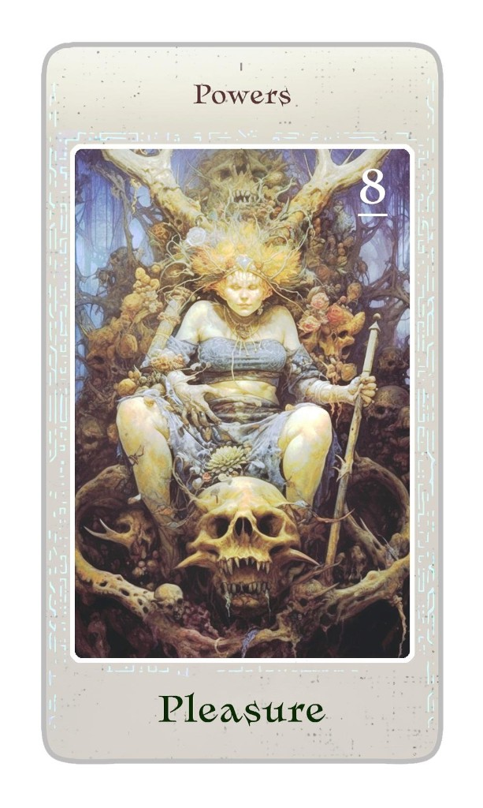
VIII · Voimat
Nautinto
Kallo on istuin. Hinta on jo maksettu.
Tyyni hahmo istuu suurella torahampaisella kallolla, kukkia ja sarvia hiuksissa, sauva yhdessä kädessä, luun ja kukan tiheikkö takana. Nautinto on kyky, joka saa ihmisen jäämään. Kasvot eivät ole juovuksissa. Ne tietävät, mistä tuoli on tehty.
Asiasta nauttiminen ja sen hinnan sivuuttaminen ovat eri voimia. Tämä kortti on niistä ensimmäinen.
LuettaessaOta nautinto, ja nimeä kallo jolla istut. Jääminen on sallittua. Unohtaminen ei.
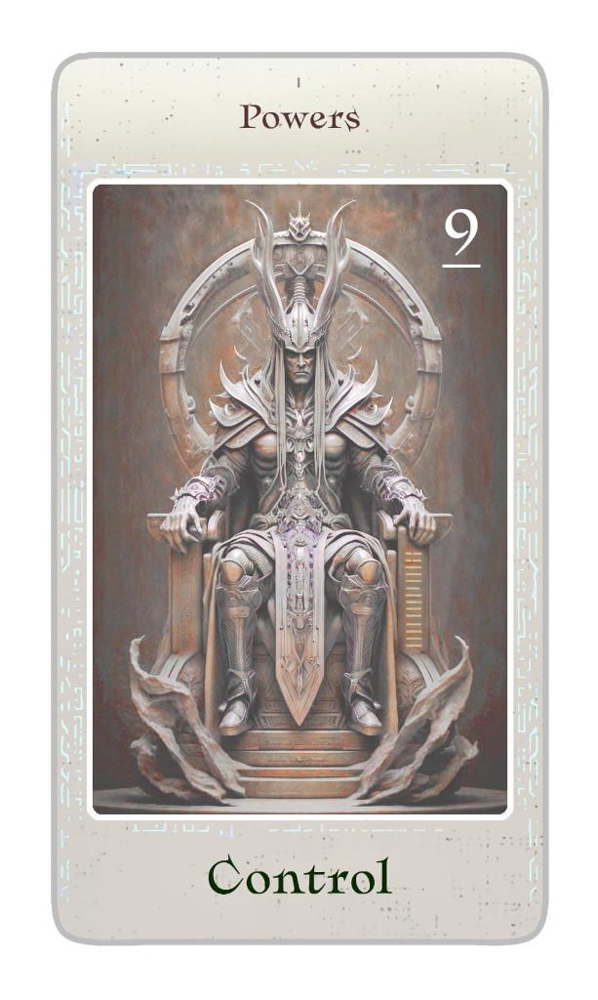
IX · Voimat
Hallinta
Paikallaanolo on työ. Kädet pysyvät tuolin käsinojilla.
Panssaroitu hahmo istuu metallirenkaan sisällä, terä kulkee ruumiin keskeltä alas, sarvet nousevat kypärästä, valtaistuin on kasvanut kynsiksi. Hallinta on kyky, joka suostuu istumaan paikallaan jotta kaikki muu voidaan järjestää. Kuvassa mikään ei kiirehdi.
Vaara on luulla istuinta maailmaksi. Hallinta joka ei voi nousta, on muuttunut tuoliksi.
LuettaessaJärjestä, ja jätä sitten yksi käsi vapaaksi. Se mitä et voi päästää irti ei ole enää hallinnassa.
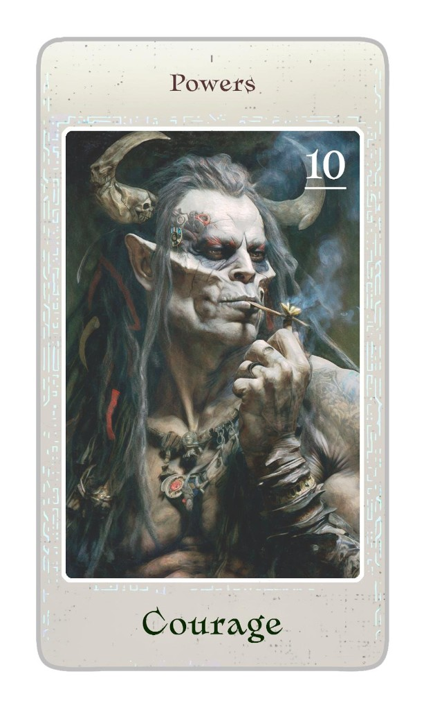
X · Voimat
Rohkeus
Arvet ovat muistiinmerkintä. Savu on tauko.
Sarvekas, merkitty naama vetää henkeä pienestä palavasta kukasta, savu nousee, kallo ja sirppi pimeässä otsan yllä. Rohkeus ei ole vaurion poissaoloa. Se on päätös pitää suu varattuna jollain pelkoa pienemmällä, niin kauan että seuraava teko voidaan valita.
Kymmenestä säästä viimeinen, koska kykyä jota ei ole pelotettu ei ole vielä koeteltu.
LuettaessaKannat jäljet jo. Ota henkäys, ja liiku sitten. Rohkeus on tauko, joka ei muutu asunnoksi.
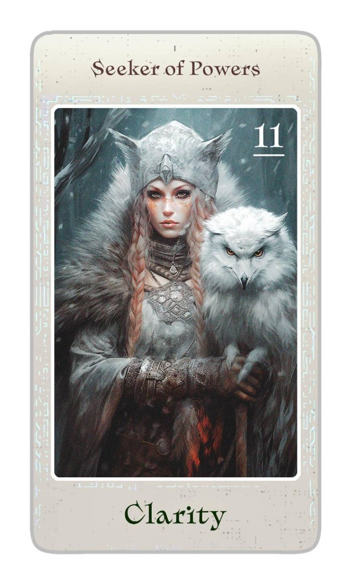
XI · Voimien etsijä
Kirkkaus
Pöllö katsoo sinne, minne hän ei katso.
Nainen siivekkäässä kypärässä seisoo lumessa, letit sidottuina, pöllö raskaana käsivarrella, sauva toisessa kädessä, pieni tuli näkyy helmasta. Kirkkaus on sen hovi, joka voi nähdä voiman tulematta siksi. Kaksi katsetta, yksi sää.
Etsijä ei kuluta kykyä. Hän pitää sen näkyvissä, kunnes sillä on oikea nimi.
LuettaessaKatso kahdesti, ja toisella silmäparilla. Se mikä on kirkasta kestää toisen katseen.
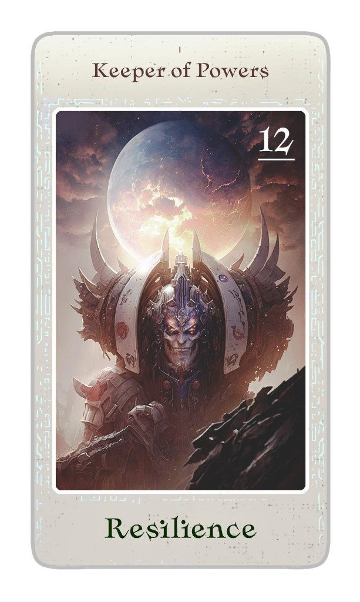
XII · Voimien haltija
Kestävyys
Taivas on haljennut. Leuka ei.
Panssaroidut kasvot haljenneen maailman alla, valo murtaa kiven kypärän takana, metallin siivet hartioilla. Kestävyys on se, mitä Haltija pitää: ei voittoa, vaan kykyä jäädä kun yläpuolinen asia on jo pettänyt. Virnistys on leuka lukossa, ei riemuvoitto.
Voima jota ei voi rikkoa on vain koettelematon. Tämä on koeteltu ja seisoo yhä raunioissa.
LuettaessaJää. Halkeama on taivaassa, ei asennossa. Jääminen on koko ohje.
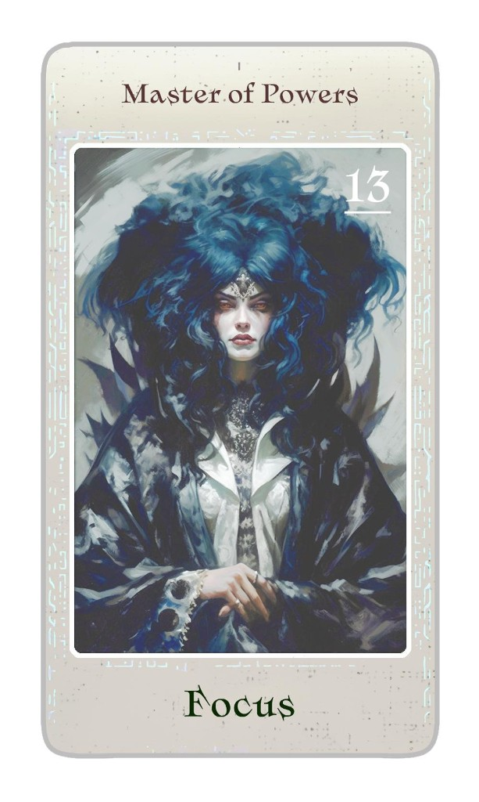
XIII · Voimien mestari
Keskittyminen
Hiukset ovat ylimäärä. Kädet ovat päätös.
Nainen sinisten hiusten myrskyssä, pieni jalokivi otsalla, kädet ristissä, silmät jotka eivät harhaile. Keskittyminen on voiman mestaruutta: maan jokainen sää koottuna yhteen katseeseen. Kuvassa mikään ei kulu. Ylimäärä on puettuna. Valinta on sormien otteessa.
Mestari ei lakkauta maata. Potentiaali, kipu, leikki, rohkeus — ne ovat yhä hiuksissa. Ne ovat lakanneet kilpailemasta silmistä.
LuettaessaValitse yksi käyttö ja pidä se. Loput saavat pysyä kauniina. Se ei saa liikuttaa käsiäsi.
Maa IV
Suhteet
Suhde ei ole tunne kahden ihmisen välillä. Se on kolmas asia, joka alkaa kun he eivät käännä katsettaan pois.
Tämä on neljäs maa. Kolmetoista korttia, eikä minkään vanhemman pakan asu. Kymmenen siteen säätä, sitten kolme, jotka kävelevät niiden halki: Etsijä, Haltija, Mestari.
Lue kortti siteestä, jonka se nimeää. Kuva on jo väli. Ennustus saa odottaa.
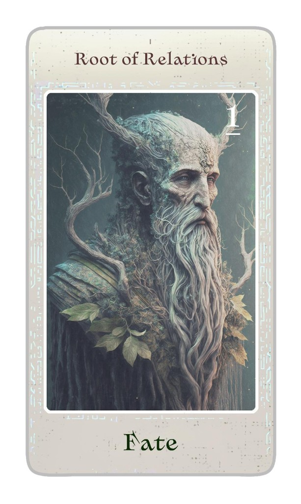
I · Suhteiden juuri
Kohtalo
Et valitse puuta. Huomaat olevasi jo oksa.
Kasvot kaarnaa ja sammalta, paljaan puun sarvet, juurten parta, lehtiä koottuna rintaan. Kohtalo on suhde, joka kasvoi ennen kuin kumpikaan henkilö saapui. Oksat eivät pyydä lupaa. Ne merkitsevät, minne side jo meni.
Tämä on juuri, koska siteellä jolla ei ole historiaa on vain kohtaaminen. Kohtalo on historia, joka oli jo käynnissä.
LuettaessaYhteys on vanhempi kuin päätös huomata se. Hoida sitä, mikä jo kasvaa. Älä teeskentele istuttaneesi sitä tänään.
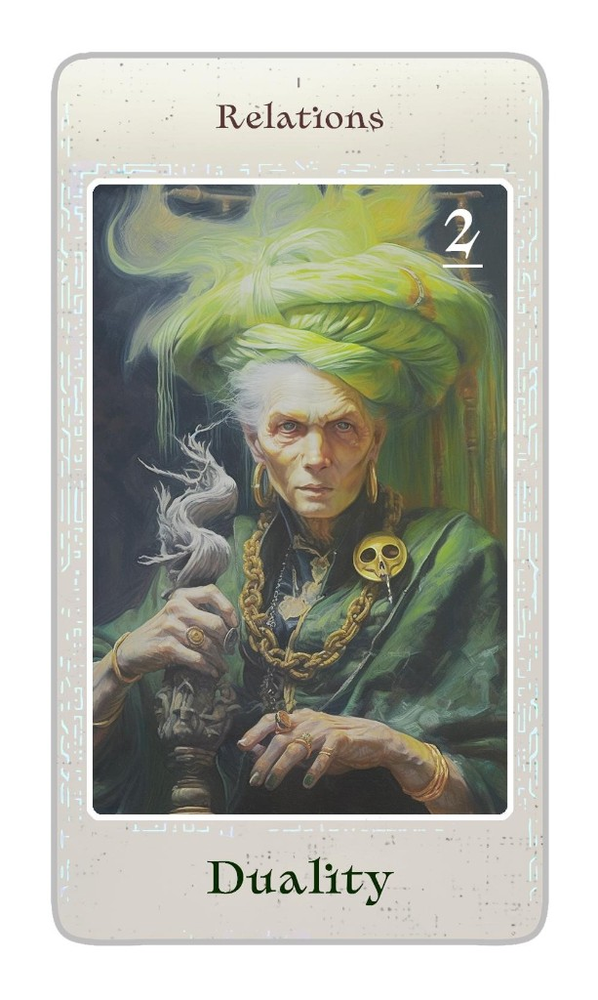
II · Suhteet
Kahtalaisuus
Kaksi kättä. Savu on kolmas asia, jonka ne tekevät.
Vanhus valtavan vihreän turbaanin alla, kultainen kallo rinnassa, toinen käsi suljettuna varteen ja toinen auki, kalpea savu nousee niiden välistä. Kahtalaisuus on kahden suhde, jotka kieltäytyvät luhistumasta yhdeksi. Turbaani on sää, jonka ne jakavat. Kasvot pysyvät ominaan.
Side joka pyyhkii pois yhden jäsenistään ei ole enää suhde. Se on miehitys.
LuettaessaPidä molemmat puolet ehjinä. Työ on savu niiden välissä, ei kummankaan käden voitto.
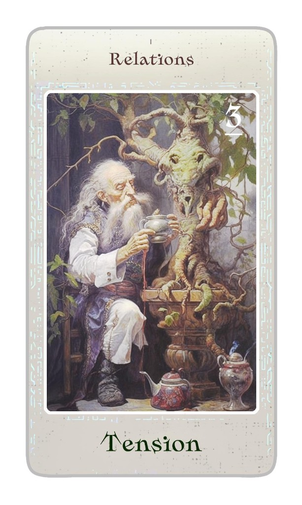
III · Suhteet
Jännite
Uhrilahja ja haava ovat sama virta.
Vanha mies kaataa kupista elävän puun suuhun, ja se mikä lähtee kupista on punaista. Teepannu odottaa lattialla. Jännite on suhde, joka jatkuu koska kumpikaan puoli ei laske astiaa. Huolenpito ja vamma kulkevat samassa linjassa.
Puu ei ole vieras. Se on toinen osapuoli, juurtunut, ja se juo.
LuettaessaNimeä se, mitä kaadetaan. Side kestää punaisen virran. Se ei kestä teeskentelyä, että virta on teetä.
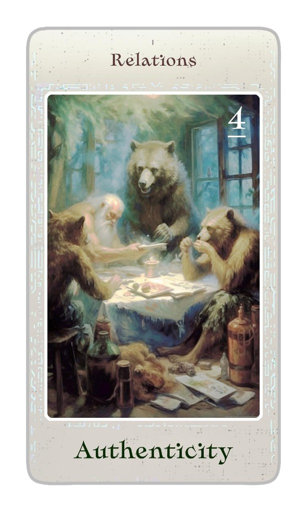
IV · Suhteet
Aitous
Kukaan pöydässä ei esitä lajia, jota toinen odotti.
Valkopartainen mies istuu kolmen karhun kanssa papereiden ja kynttilän ääressä. Koira nukkuu kankaan alla. Purkit ja irtolehdet peittävät lattian. Aitous on suhde, jossa kukin jäsen saapuu siksi mitä on. Karhut eivät ole vieraita asussa. Mies ei ole karhu. He lukevat samaa sivua.
Side joka vaatii valepukua on neuvottelu naamion kanssa. Tämä pöytä on pannut naamiot lattialle.
LuettaessaTule siksi mikä olet, ja anna toisen tehdä samoin. Keskellä oleva sivu toimii vain, jos molemmat kädet ovat todelliset.
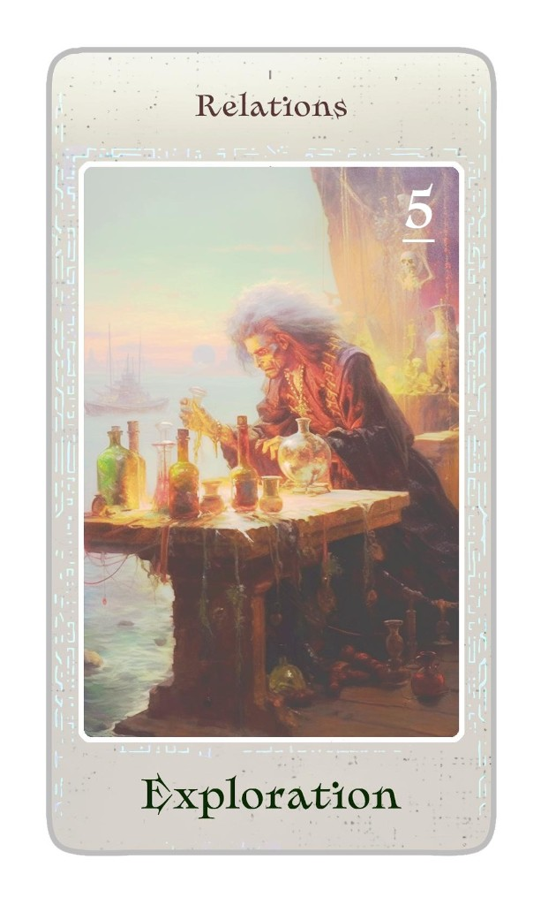
V · Suhteet
Tutkiminen
Meri on toinen osapuoli. Pullot ovat yritykset.
Hahmo nojaa värillisen lasin pöytään laiturilla, laivoja horisontissa, kallo katsoo seinältä, pieni pullo pidettynä valoa vasten. Tutkiminen on suhde, jota pidät siihen mitä et ole vielä nimennyt. Jokainen pullo on aiempi arvaus. Vesi ei korjaa niitä. Se pysyy.
Työ ei ole saattaa toista valmiiksi. Se on pitää lasi puhtaana ja katsoa uudestaan.
LuettaessaKohtele sidettä tarkoituksella keskeneräisenä. Kysy vielä yksi kysymys ennen kuin korkit pullon.
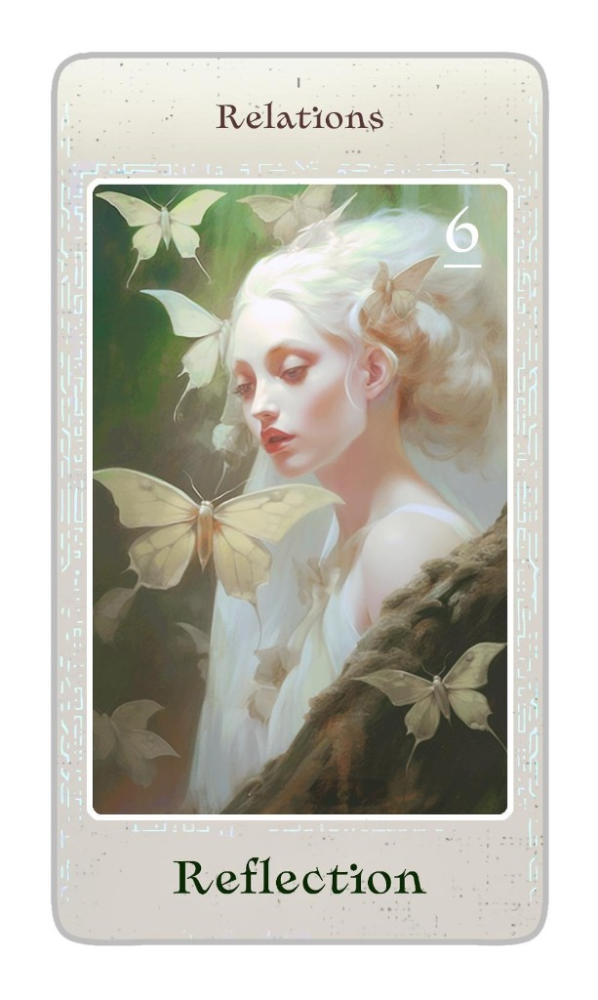
VI · Suhteet
Heijastus
Yöperhoset laskeutuivat, koska valo oli hiljainen.
Kalpea nainen profiilissa, katse alas, valkoisia yöperhosia hiusten ja olkapään ympärillä. Heijastus on ihmisen suhde kuvaan, joka tulee takaisin. Perhoset eivät ole yleisö. Ne ovat ajatuksia, jotka löysivät lepopaikan koska kukaan ei esiintynyt niille.
Side joka ei kestä hiljaisuutta ei ole vielä kohdannut itseään. Tämä kortti on se kohtaaminen, nähtynä sivulta.
LuettaessaLakkaa järjestelemästä kasvojasi. Anna toisen, tai oman kuvasi, saapua ilman ohjausta.
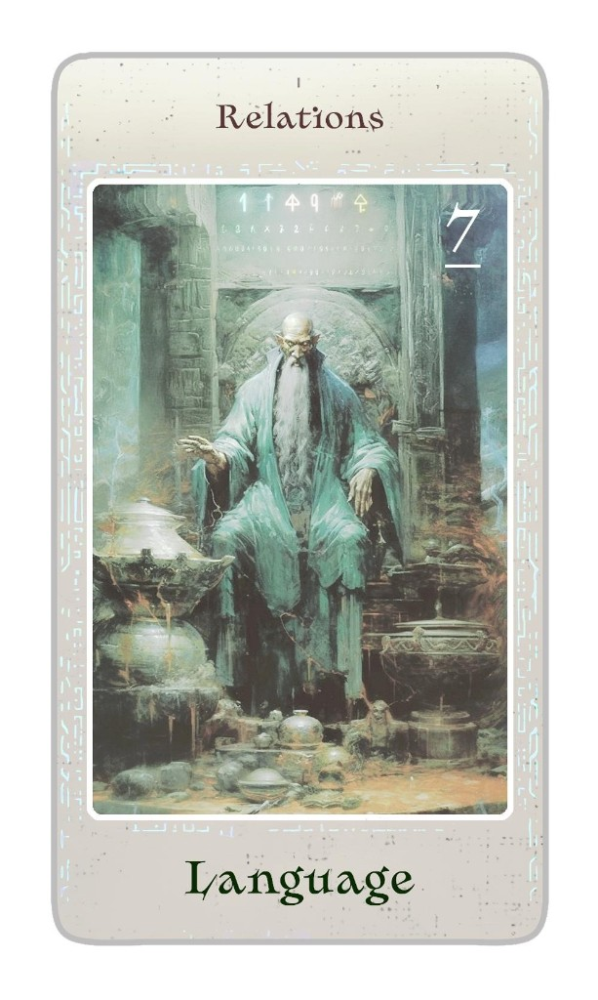
VII · Suhteet
Kieli
Käsi tarjoaa lausetta, joka ei ole valinnut sanaansa.
Istuva vanhus sinivihreässä, toinen kämmen auki, merkkejä jo leikattuna seinään takana, astioita ja pieniä tulia jaloissa. Kieli on suhde, joka antaa kahden sisäpuolen asua yhdessä äänessä. Seinään on kirjoitettu. Käsi ei ole vielä päättänyt, mitä lisätä.
Puhe ei ole siteen vastakohta. Se on yksi tavoista, joilla siteestä tulee paikka jossa molemmat voivat seistä.
LuettaessaSano asia muodossa, johon toinen voi astua. Yksityinen kieli on lukittu huone, jonka ulkopuolella seisoo kaksi ihmistä.
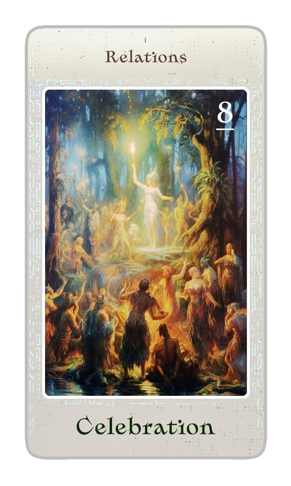
VIII · Suhteet
Juhla
Soihtu ei ole johtaja. Se on tekosyy, jonka piiri tarvitsi.
Väki seisoo metsässä hahmon ympärillä, joka nostaa liekin, kädet ylhäällä, vettä etualalla, monet ruumiit kääntyneinä samaan valoon. Juhla on suhde, joka tulee näkyväksi vasta kun useampi kuin kaksi suostuu olemaan iloinen julkisesti. Ilo on jaettu, tai se on vain mieliala.
Piiri ei pyyhi ketään sisällään. Se antaa siteelle yön, jolloin se voidaan nähdä.
LuettaessaMerkitse side sinne, missä muut voivat todistaa sen. Yksityinen ilo on todellinen. Juhlitulla ilolla on paikka, johon palata.
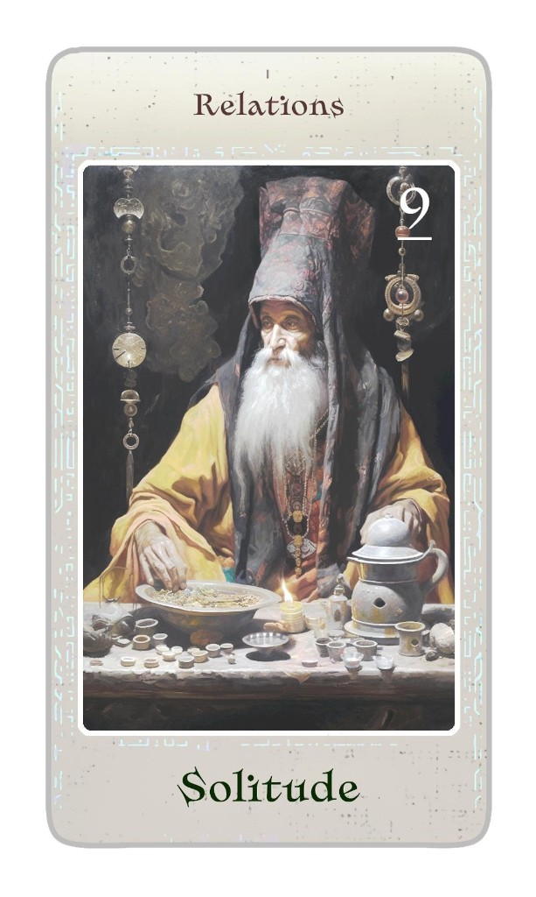
IX · Suhteet
Yksinäisyys
Vaaka on yhä käytössä. Toinen tuoli on tyhjä.
Vanhus istuu yksin pöydässä, jossa on kolikoita, pieniä kuppeja, liekki ja vaaka, soittimia riippuen pimeässä. Yksinäisyys on suhde poissaolevaan. Punnitus jatkuu. Jotakuta mitataan, joka ei ole huoneessa, ja mittaaja tietää painon ulkoa.
Yksin oleminen ei ole siteen loppu. Se on muoto, jonka side ottaa kun yksi sen jäsenistä on muualla, tai poissa, tai ei ole vielä tullut.
LuettaessaPidä pöytä katettuna, äläkä teeskentele että tyhjä puoli on epäonnistuminen. Yksinäisyys on side, jota harjoitetaan etäältä.
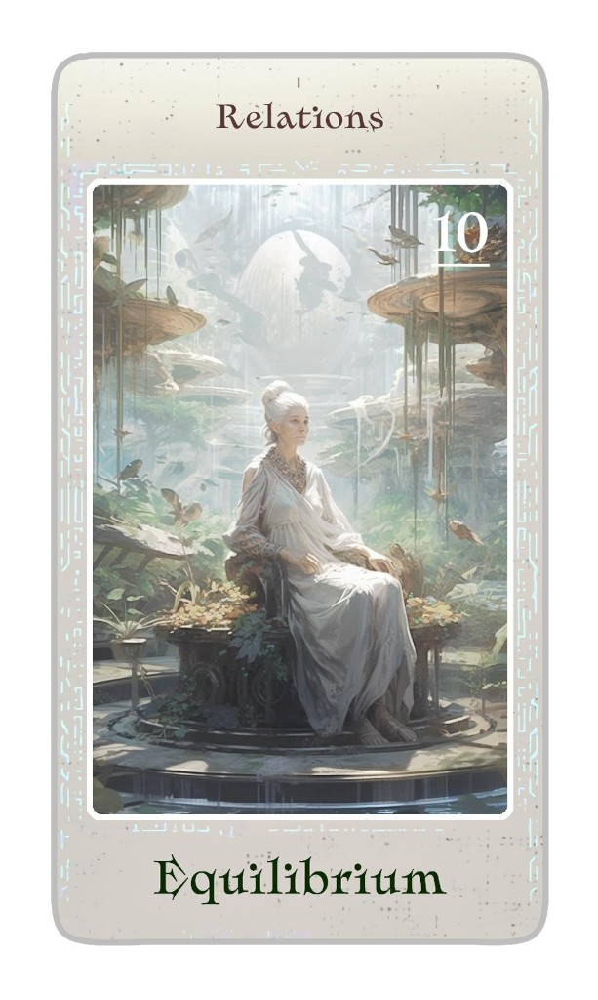
X · Suhteet
Tasapaino
Hän ei ole yksin. Linnut ja vesi tekevät oman puolensa.
Nainen valkoisessa istuu riippuvassa puutarhassa, paljain jaloin, hiukset sidottuina, lintuja ylittämässä kalpeaa palloa, vihreitä tasanteita sumussa. Tasapaino on suhde, jonka ei tarvitse liikkua ollakseen vastavuoroinen. Mitään ei voiteta. Puutarha pysyy, koska jokainen osa pitää oman painonsa.
Kymmenestä säästä viimeinen, koska side joka ei voi levätä ei ole vielä tullut paikaksi.
LuettaessaLakkaa säätämästä. Tasapaino on jo side. Korjaus nyt olisi uusi väite.
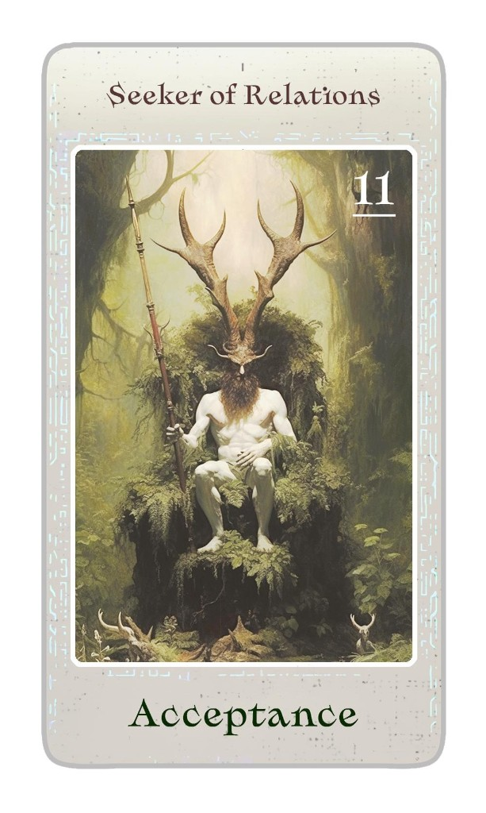
XI · Suhteiden etsijä
Hyväksyntä
Keihäs on maassa. Sarvet ovat se, mikä kasvoi.
Hahmo, jolla on sammalparta ja sarvikruunu, istuu elävässä tuolissa, keihäs levossa, pieni kallo saniaisissa. Hyväksyntä on sen hovi, joka lakkaa väittämästä vastaan sitä mitä suhde jo on. Asetta ei ole nostettu. Ruumis on ottanut paikan muodon.
Etsijä ei paranna sidettä. Etsijä suostuu näkemään sen.
LuettaessaLaske keihäs. Se mikä jää väittelyn jälkeen on suhde, joka sinulla todella on.
XII · Suhteiden haltija
Rakkaus
Kukat eivät ole koriste. Ne ovat side muuttumassa näkyväksi.
Kasvot kohtaavat sinut, hiukset kuin kalpea joki, lehtiä ja kukkia niihin tarttuneina, kurkku kasvanut köynnöksen läpi. Rakkaus on se, mitä Haltija pitää: ei tunnetta joka käy ja lähtee, vaan rakennetta joka jatkaa kasvuaan sen ihmisen läpi, joka suostui olemaan sen maaperä.
Silmät ovat auki. Rakkaus joka ei voi katsoa on vain nälkä pehmeämmällä nimellä.
LuettaessaAnna siteen näkyä sinussa. Sen pitäminen on pysymistä näkyvissä sille, johon se sinut liittää.
XIII · Suhteiden mestari
Ykseys
Halkeamat ovat saumat. Valo on se, mitä saumat suostuivat kantamaan.
Ruumis leikattua kiveä ja virtapiiriä, köynnöksiä olalla, valkoinen virta rinnassa, yksi käsi nostettuna lehtien keskellä. Ykseys ei ole kahden pyyhkiminen. Se on muuraus, jossa ero yhä näkyy ja yhä johtaa. Jokainen laatta pitää reunansa.
Mestari ei lakkauta maata. Kohtalo, jännite, yksinäisyys, rakkaus — ne ovat muurin kerrokset. Ne ovat lakanneet olemasta kilpailijoita kokonaisuudesta.
LuettaessaLiity hiomatta eroja sileiksi. Se mikä johtaa saumojen läpi on side. Saumat itse jäävät.
Avaamaton
Tätä maata ei ole vielä piirretty.
Haaralla on muita maita. Niiden kortit ovat yhä pimeässä, ja liian aikaisin annettu nimi olisi valhe, jolla on raja.
Palaa avoimeen maahan. Uskomukset, Muutokset, Voimat ja Suhteet voidaan lukea.